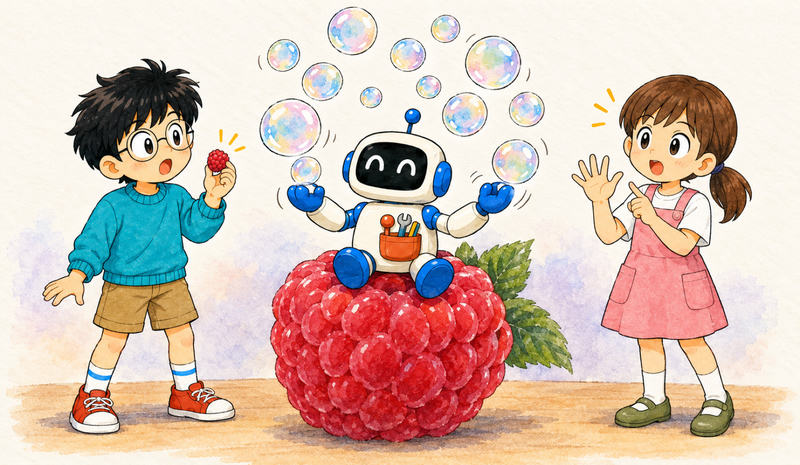
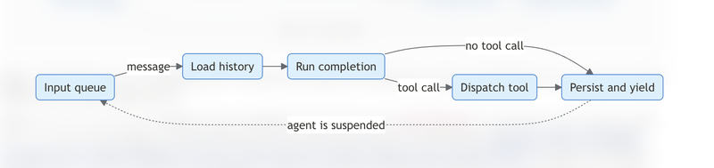
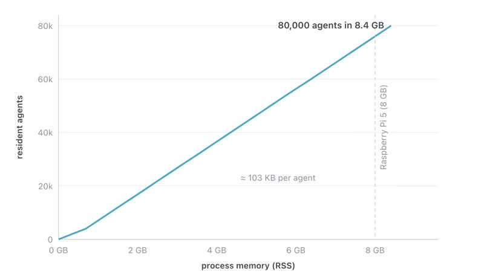
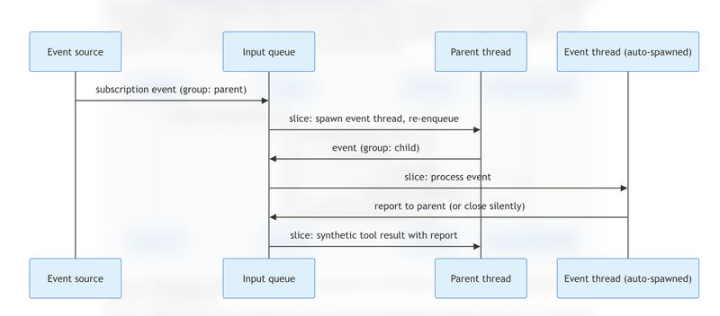

Feature 06 · ARTICLE · 2026 10
Introducing Infinity: a runtime for extreme agent concurrency
Agents spend much of their time waiting on tools: a build that runs twenty minutes, a pull request that arrives in hours, an approval that comes the next morning. Most harnesses block while they wait, holding a process and its memory. Today, we’re releasing Infinity under Apache 2.0, as part of the Hydro project, a collaboration between AWS and UC Berkeley. It is a research project that suspends an agent when it calls a tool and resumes it when the result arrives, the way languages suspend asynchronous functions. We can fit 75,000 concurrent agents in the 8 GB of a Raspberry Pi 5, and a tool call that takes days needs nothing running in the meantime. This is an early release, and we are sharing it to get feedback.

Agents as stackless coroutines

When an async function awaits, the runtime saves its continuation, the state it needs to resume. Threads and stackful coroutines keep the whole call stack in memory. Stackless coroutines, which Rust uses for async fn, keep only the values relevant at each await, so an executor can run many of them.
An agent can be suspended the same way. At the moment it calls a tool, its conversation history holds everything needed to continue. If the runtime persists that history, it can discard all in-memory state, and any process with access to the store can resume the agent.
Infinity runs each agent as a sequence of bounded slices. A slice loads the history, runs one model completion, persists the output, and dispatches at most one tool call. Then it ends. Tool calls are the await points. Everything that can resume an agent, user text and tool results alike, arrives as a message on an input queue, so the runtime does not need to keep an agent alive while it waits.
Running agents concurrently

Agents run inside an agent system, a pool of threads that share stores, tools, and a model, organized like an actor system. Each thread has its own input queue and shares no mutable state. Messages for one thread are processed in order, one slice at a time, because two slices writing the same history would overwrite each other’s turns. Different threads run in parallel. A thread with nothing queued has no task.
A suspended agent is only its history. To measure what that costs, we ran 80,000 agents, twenty turns each, 3.2 million completions in all, on a single thread of an AMD EPYC 9R14, with in-memory stores and a simulated model. Resident memory grew linearly, at about 100 KB per idle agent, most of it conversation history. At that rate, about 75,000 agents fit in 8 GB.
For a developer, the difference is in how tools are written. A tool’s execute method starts the work and returns immediately; when the work completes, the tool sends the result to the agent’s input queue. If the lookup takes a hundred milliseconds, the next slice begins almost immediately. If it takes three days, the agent occupies only its stored history. The code is the same in both cases.
Running on serverless platforms
Because a slice never waits on external operations and loads all of its state from storage, it can run on serverless platforms. In step mode, the platform calls step once for each batch of messages, and nothing is retained in memory between calls. Local mode and step mode run the same pipeline; the main difference is the InputSender, which in step mode writes to a durable queue.
Our reference deployment on AWS uses an SQS FIFO queue with one MessageGroupId per thread, a Lambda invocation per delivery, Aurora DSQL for histories, DynamoDB for deduplication state, and SQS delivery delays and EventBridge Scheduler for timers. The platform imposes requirements:
Bounded execution time. A slice is one completion and a few storage and dispatch calls.
No process affinity. All state is stored by thread ID.
At-least-once delivery. Each input carries a stable ID, and the runtime skips redelivered messages, so a slice is idempotent.
Durable turns. Streamed output is committed only when the turn completes, and a turn that ends in a tool call is persisted before the call is dispatched.
Serialization without locks. FIFO message groups and Lambda keep each thread’s slices one at a time.
A blocking runtime can also be hosted on serverless, but each invocation must stay open while its tools run. In Infinity, an agent waiting on a three-day CI pipeline uses no compute until the pipeline reports.
Synthetic tool calls

A waiting agent also needs to learn about events: output from a long command, a new pull request on a subscribed repository. Model APIs do not provide a way to represent them. Each tool call must be answered by exactly one result, so a second result is typically rejected. A user message attributes the event to the user. The system prompt removes it from the order of the history, which the model relies on.
So the runtime adds an assistant tool call the model did not make, followed by a result carrying the event:
▶ Synthetic: receive_event__injected({
original_tool_name: "subscribe_github_events",
original_tool_call_id: "call_abc123",
original_args: { owner: "acme", repo: "api" }
})
■ Result: {"event_type": "pull_request", "action": "opened", "number": 42}
This preserves what models learn in post-training about interpreting tool results. The arguments tell the model which of its requests the event belongs to. The dedicated name keeps an event distinct from a new invocation; the runtime never offers it as a tool and rejects the call if the model tries.
The same mechanism carries messages between agents. A built-in spawn_thread tool behaves like a subscription: it returns once the child exists, and the child’s reports, from report_to_parent and finally close_thread, arrive as events on that call. The parent can tell which child sent each report, and the runtime needs no separate messaging system.
The runtime also chooses which thread processes an event. By default, each event goes to a temporary child that inherits the parent’s context; the child acts and reports, or closes silently and leaves the parent’s history unchanged. Events that arrive together are handled by children running concurrently. A tool can instead mark an event associative, adding it directly to the subscriber’s history, for updates on something the agent is following, such as a background test run.
Open questions
Interleaved events. Models are mostly trained on synchronous tool calls. We would like to understand how the number and order of events, and threaded versus associative processing, affect an agent’s decisions.
Scheduling. Threads now run in arrival order; a scheduler could run user-facing threads ahead of background handlers.
Compaction in a tree of agents. Summaries are indexed by position, so a child spawned before compaction can reconstruct its inherited history, but we have not studied large, long-running trees.
Event authenticity. Agents exposed to the internet may receive inauthentic payloads. How should a runtime establish provenance while staying stateless?
Infinity is available on GitHub, with a quickstart. We welcome feedback on both the ideas and the implementation.